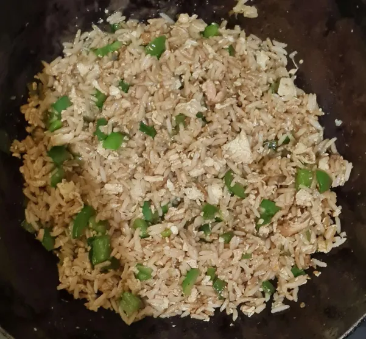

Description
Egg fried rice is a simple classic asian dish which can quickly made and can be even served as a standalone meal.Many people have their own version of egg fried rice, you can watch a few videos on youtube such as Uncle Roger's Egg Fried Rice.
Below I'll be listing ingredients and then instructions to cook, feel free to adjust the quantities according to your taste.
Ingredients
- Garlic
- Shallot (if you don't have shallots, you may use onions)
- Spring Onion
- Chilies
- Egg
- Cooked Rice (bettter if they are a day old)
- Soy sauce
- Sesame oil
Instructions
- Smash the garlic and then cut it to avoid it slipping out, finely chop the shallots and spring onion, and cut chilies too!
It is good to have the veggies finely chopped so that everything is of similar size. When enjoying the meal, every spoon of egg fried rice will have a good mix of every element.
- Crack the eggs and whisk them properly.
- Light up the fire, let the wok heat for a while then pour oil little by the sides coating it nicely.
- After heating the oil for a while, put in garlic and shallot, stir till light brown then pour the whisked eggs and again stir well.
- Add rice to this when eggs are almost done.
- Add some soy sauce by the sides and mix it well.
- Now add some sesame oil and stir.
- Add spring onion and chilies now.
Reason for adding spring onion towards the end is because it can otherwise get cooked quickly and become soggy.
- Now serve it and enjoy your meal!
Return to top
Go back to main page